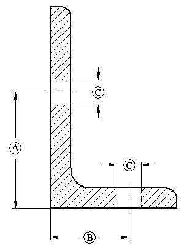
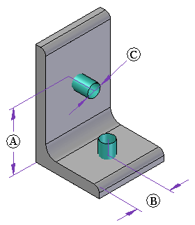

Defining hole locations in a frame
A frame component may contain information on where holes can be drilled.
-
Hole locations (A, B) are defined in the frame cross section.
-
Hole diameter (C) represents the maximum allowed hole size.
-
Hole position along a frame is specified during the assembly hole feature creation. A cylindrical construction surface added to the frame component defines the hole location.


Creating holes in frames
You create holes in frames by adding assembly hole features in the Assembly environment. Use the cylindrical construction surfaces and sketch relationships in each frame member to create hole assembly features in the desired locations. You can use the Include command to include edges from the construction surfaces to aid in aligning the assembly hole features.
If hole location construction surfaces exist in the cross section component file, they do not appear on the frame members by default when the frame is created. You must use the Hole Location→Retrieve from Cross Section Component command on the frame shortcut menu to bring these surfaces into the frame.
Removing the construction surfaces from the frame
You can hide construction surfaces by choosing the Show/Hide Component→Surfaces command on the shortcut menu.
You also can delete the construction surfaces from the frame by choosing the Hole Location→Delete from Frame command on the shortcut menu. Use the Retrieve from Cross Section Component command to restore them if needed.
How do I
Add a custom frame componentCreate a structural frame
Save a structural frame component
Edit frame end conditions
Edit a frame cross section
Create a frame end cap
Edit a frame end cap
Trim or extend a frame
Create frames with weld gaps
Learn more
Structural frame design workflowSaving frame components
Saving structural frame components
Look up more details
Frame commandFrame command bar
Frame Options dialog box
Creating a structural frame
Adding members to a frame
Edit End Conditions command
Edit Cross Sections command
Frame snap points
Frame End Cap command
End Cap Options dialog box
Frame Origin command
Trim/Extend command
Trim/Extend command bar
Adding custom frame components to a local library
Creating a custom structural frame component: best practices